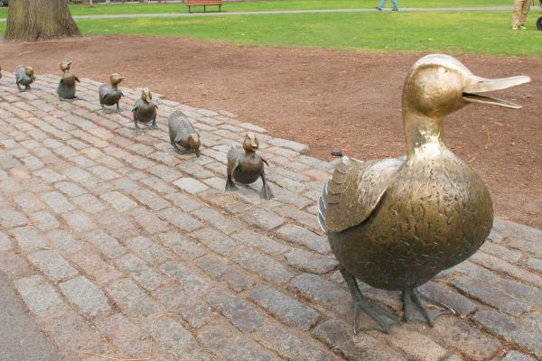

Boston's food reputation is about fifteen years out of date. People still arrive expecting chowder in a bread bowl and a $40 lobster roll on a wharf, and you can have both, but the city that actually eats here has moved on: to the oyster bars that open at noon, the South End's chef-run dining rooms, dim sum in Chinatown, the taquerias of East Boston, Portuguese bakeries in Cambridge, and a beer scene that outgrew Sam Adams a decade ago.
This is the hub for everything we have written about where to eat in Boston. It starts with the six guides people use most, then covers what the city is genuinely known for eating and where to get the best version of each, which neighborhood to eat in for what, and the practical things that trip up visitors: reservations, cash-only counters, and why nobody here has happy hour.
Everything listed is a real place we have eaten at, with an address and the nearest T stop. Where a place is cash-only, closes early, or needs a booking, the guide says so.
The short answer
Where to eat in Boston: the 10 essentials
- A lobster roll, hot with butter or cold with mayo
- Oysters at a raw bar, ideally the cheap hour
- Clam chowder, but at the right place
- A North End dinner and the cannoli test
- Dim sum or late-night noodles in Chinatown
- A pint in a proper Irish pub
- The South End for a serious dinner
- Weekend brunch, booked ahead
- A café you can sit in all morning
- A rooftop drink at sunset
01
Start here: the six most-used Boston food guides

Best lobster rolls
Hot vs. cold, wharf shacks vs. sit-down, and which ones are worth $35.

Best cafés
Good coffee, real seats, and the ones that will let you stay for a laptop morning.

Best brunch
From South End institutions to the diners with no wait, with notes on who takes reservations.
Best rooftop bars
Seaport, Back Bay and Downtown rooftops, ranked by view and by how hard they are to get into.

Bars to meet people
Where the room talks to strangers: trivia bars, beer halls, and the places to go alone.

Best cheap eats
Chinatown, Allston, East Boston and the North End counters where a real meal is still under $15.
02
What Boston is known for eating
The dishes the city is actually associated with, and where to go for each.
The lobster roll
Maine-style is cold lobster with a little mayo on a toasted split-top bun; Connecticut-style is warm lobster in melted butter. Boston serves both and argues about neither, mostly. Skip the tourist wharves and go where the bun is buttered and griddled and the lobster is not chopped to paste. Full ranking in the best lobster rolls in Boston.
Oysters
New England grows some of the best cold-water oysters in the world, from Wellfleet and Duxbury and Island Creek, and Boston is where they land. Union Oyster House is the oldest continuously operating restaurant in the country and worth one visit for the bar; the serious oyster bars are elsewhere. See the best oysters in Boston.
New England clam chowder
Thick, cream-based, with clams, potato and salt pork or bacon. The bread bowl is a tourist invention. The best versions are at the seafood counters and old-school fish houses rather than the places with "chowda" on the awning; Legal Sea Foods has served it at every presidential inauguration since 1981, if you want the safe bet.
North End Italian and the cannoli
Nearly 100 restaurants in half a square mile, from red-sauce rooms that have not changed in 50 years to newer pasta bars. Then the cannoli: Mike's Pastry (big, sweet, the line) versus Modern Pastry (smaller, filled to order, the local vote), with Bova's open 24 hours as the tiebreaker. Guides: best North End restaurants, best cannoli and best pizza in Boston.
Chinatown
One of the largest Chinatowns in the country, three blocks from Downtown Crossing. Dim sum on weekend mornings, hand-pulled noodles, hot pot, and the only neighborhood that reliably feeds you after midnight. See the best late-night food in Boston.
Irish pubs
Boston has more Irish heritage per capita than any other big American city, and the pubs are the real thing: Guinness poured slowly, live sessions on weeknights, and a bartender who will talk to you. Some are for tourists and some are for the neighborhood; the best Irish pubs in Boston tells them apart.
Boston cream pie, baked beans and the rest
Boston cream pie was invented at the Parker House Hotel in 1856 and is still on the menu there. Baked beans gave the city its Beantown nickname and are now mostly a Saturday-night nostalgia dish. Fluffernutters, frappes (milkshakes) and Dunkin' on every corner complete the picture. For dessert with actual range, see the best ice cream in Boston; New England eats more of it per person than anywhere else in the country.
03
Where to eat in Boston by neighborhood
| Neighborhood | Go for | Nearest T | Notes |
|---|---|---|---|
| North End | Italian, pastries, pizza, espresso | Haymarket | Walk-ins, lines from 6pm, many cash-only |
| South End | Chef-driven dinners, brunch, wine bars | Back Bay / Tufts Medical | Book ahead for weekends |
| Seaport | Seafood, rooftop bars, big groups | Courthouse (Silver) | Newest and priciest; best views |
| Chinatown | Dim sum, noodles, hot pot, late-night | Chinatown (Orange) | Cheap, open late, mostly cash-friendly |
| Back Bay | Newbury Street cafés, hotel bars, steak | Copley / Arlington | Polished and expensive |
| Beacon Hill | Charles Street bistros, quiet dinners | Charles/MGH | Small rooms, book ahead |
| Fenway–Kenmore | Pre-game, Time Out Market, sports bars | Kenmore | Chaotic on game days |
| Harvard Square | Cafés, bookshop-adjacent lunches, burgers | Harvard (Red) | Good late into the evening |
| Central Square | Indian, Ethiopian, cocktail bars, live music | Central (Red) | Widest range per block in the area |
| Somerville | Breweries, Union Square dinners, Davis bars | Davis / Union Square | Where the cooks eat on their night off |
| Allston | Korean, Vietnamese, cheap eats, dive bars | Harvard Ave (Green B) | Cheapest good food in the city |
| East Boston | Salvadoran, Colombian, Mexican, harbor views | Maverick (Blue) | One stop from Downtown; underrated |
| Jamaica Plain | Neighborhood restaurants, Centre Street cafés | Green Street / Stony Brook | Relaxed, local, good for brunch |
| South Boston | Irish pubs, brunch, waterfront seafood | Broadway (Red) | Busy bar scene on weekends |
Every neighborhood page in the neighborhoods hub has a where-to-eat section.
04
Bars and drinking in Boston
Boston drinks in three registers. There are the Irish pubs and dive bars, which are the soul of the place and where you go to talk to someone. There are the cocktail bars and speakeasies, mostly Downtown, in the South End and around Central Square, which are as good as any city's. And there are the rooftops and hotel bars, which are about the view and are priced accordingly.
The beer scene is bigger than most visitors expect. Trillium, Harpoon, Night Shift, Lamplighter, Aeronaut and Dorchester Brewing all have taprooms you can reach on the T, and the Seaport and Somerville have clusters of them. Trivia is a genuine weeknight institution here, and most bars will add a solo player to a team.
Guides: rooftop bars, cocktail bars, speakeasies, dive bars, Irish pubs, breweries, trivia nights, patios, happy hours and bars to meet people. For a night that is more than one bar, see things to do in Boston at night.
05
Practical notes for eating in Boston
Reservations. Friday and Saturday dinner at any restaurant you have read about needs a booking, often a week or two out, and most are on Resy or OpenTable. The trick is the bar: nearly every serious Boston restaurant serves the full menu at the bar, first come first served, and solo diners and couples can usually get a seat by arriving at opening or after 9pm.
Cash. A surprising number of North End bakeries and old-school counters, some Chinatown restaurants and a few dive bars are cash-only or have a card minimum. Bring $40 in cash for a North End evening and you will not have to find an ATM in a line.
Happy hour. Massachusetts has banned discounted drinks since 1984. There is no legal happy hour in Boston, and a bar advertising one is offering food deals, cheap oysters or a fixed-price early menu instead. Our happy hours guide covers what exists.
Hours. Boston eats and closes early. Many kitchens stop at 9 or 10pm on weeknights, bars close at 1 or 2am, and the T stops around 12:30am. Plan late nights around Chinatown, a few diners, and the places in late-night food in Boston.
Tipping is 18 to 22 percent at table service, and a dollar or two per drink at the bar. Tax on restaurant meals is 7 percent in Boston. Working from a café is normal; the remote work cafés guide lists the ones with outlets and Wi-Fi that do not mind.
06
All Boston food and drink guides
By dish: lobster rolls · oysters · pizza · cannoli · ice cream · North End restaurants
By meal: brunch · cheap eats · late-night food · cafés · remote work cafés
By bar: rooftop bars · cocktail bars · speakeasies · dive bars · Irish pubs · breweries · patios · happy hours · trivia nights · bars to meet people
Back to explore Boston, or on to things to do in Boston to walk it off.
FAQ
Eating in Boston: common questions
What food is Boston known for?
Lobster rolls, New England clam chowder, oysters, Boston cream pie, baked beans and, thanks to the North End, cannoli and Italian-American red-sauce cooking. Irish pubs and Portuguese and Cape Verdean food are also part of the city's table.
Where is the best neighborhood to eat in Boston?
The North End for Italian, the South End for the city's best chef-driven restaurants, Chinatown for late-night and dim sum, Cambridge and Somerville for the widest range, and the Seaport for seafood with a view. The table above breaks it down.
Do you need reservations in Boston?
For dinner on Friday or Saturday at a well-known restaurant, yes, a week or two ahead. Most North End places take walk-ins but expect a line after 6pm. Bars, oyster bars and counter-service spots are first come, first served.
Why doesn't Boston have happy hour?
Massachusetts has banned discounted drinks since 1984, so bars cannot legally offer happy hour drink specials. What you will find instead are food specials, cheap oyster hours and set-price early menus. Our happy hours guide covers what is actually available.
Is Boston an expensive city to eat in?
It can be. Dinner with drinks at a good restaurant runs $60 to $100 per person, and a lobster roll is $30 to $40. But Chinatown, Allston, East Boston and the food halls are cheap, and a North End pizza slice or a cannoli is still a few dollars. See the best cheap eats in Boston.
What time do Boston restaurants and bars close?
Earlier than you expect. Most kitchens stop between 9 and 10pm on weeknights, bars close at 1 or 2am by law, and the T stops around 12:30am. Chinatown and a handful of diners are the reliable late-night options.